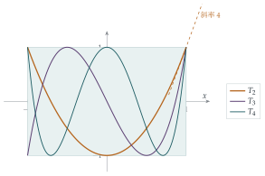

STEP I 1988，第 7 题
继续之前，请先阅读题目（原题为英文）。题目载于 STEP Support Programme 的题目资料库： step.maths.org/questions/88-s1-q7
引子
假如你知道一个函数在某个区间上的值总是介乎 \(-1\) 与 \(1\) 之间，你能否说出它有多陡？对一般的函数来说，答案是不能：\(\sin(1000x)\) 的值介乎 \(-1\) 与 \(1\) 之间，但它的斜率可以大至 \(1000\)。不过二次函数（quadratic）不可能这样摆动。这道题目要证明的是：一个困在方框 \(|x| \leq 1\)、\(|y| \leq 1\) 之内的二次函数，在方框内的斜率永远不会大于 \(4\)，而且 \(4\) 已是最佳的界。
这个问题的来历出人意表。1887 年，以元素周期表闻名的化学家门捷列夫（Dmitri Mendeleev）正在研究溶液的密度如何随浓度变化，并用二次函数拟合他的数据。他需要知道数据中的误差对曲线斜率的影响最坏可以有多大，于是证明了与本题完全相同的结果。两年后，年轻的马可夫（Andrei Markov）解决了任意次数多项式（polynomial）的一般问题，而答案直接引出了数学中最重要的一些多项式。
动笔之前
\(\mathrm{f}'(x)\) 的公式只用到 \(\mathrm{f}\) 的三个值：在 \(-1\)、\(0\) 和 \(1\) 的值。为甚么三个值就足以确定一个二次函数的导数（derivative）？
二次函数有三个系数，所以只要知道它在任意三点的值，就能把它确定下来。它的导数同样是由这些系数决定的函数，因此必定可以用这三个值表示出来。题中的公式正好告诉你怎样表示。而这恰恰是你所需要的，因为假设 \(|\mathrm{f}(x)| \leq 1\) 告诉你的是 \(\mathrm{f}\) 的值，而结论谈的却是它的导数。
逐步解题
阶段 1 公式
\(\mathrm{f}(1) = a + b + c\)，\(\mathrm{f}(-1) = a - b + c\)，而 \(\mathrm{f}(0) = c\)。所以右方是 \[(a + b + c)\left(x + \tfrac12\right) + (a - b + c)\left(x - \tfrac12\right) - 2cx.\] \(x\) 的系数是 \((a + b + c) + (a - b + c) - 2c = 2a\)，常数项是 \(\frac12(a + b + c) - \frac12(a - b + c) = b\)。所以右方等于 \(2ax + b = \mathrm{f}'(x)\)。■
阶段 2 上界
对公式取绝对值，然后运用三角不等式（triangle inequality），再配合 \(|\mathrm{f}(1)|, |\mathrm{f}(-1)|, |\mathrm{f}(0)| \leq 1\)。你会得到 \(|\mathrm{f}'(x)|\) 的甚么上界（写成 \(x\) 的函数）？
根据三角不等式 \(|u + v + w| \leq |u| + |v| + |w|\)， \[|\mathrm{f}'(x)| \leq |\mathrm{f}(1)|\,\bigl|x + \tfrac12\bigr| + |\mathrm{f}(-1)|\,\bigl|x - \tfrac12\bigr| + 2|\mathrm{f}(0)|\,|x| \leq \bigl|x + \tfrac12\bigr| + \bigl|x - \tfrac12\bigr| + 2|x|.\]
证明当 \(|x| \leq 1\) 时，\(\bigl|x + \tfrac12\bigr| + \bigl|x - \tfrac12\bigr| + 2|x| \leq 4\)。（按正负号分情况讨论。）
若 \(|x| \leq \frac12\)，则 \(x + \frac12 \geq 0\) 而 \(x - \frac12 \leq 0\)，所以 \(\bigl|x + \tfrac12\bigr| + \bigl|x - \tfrac12\bigr| = (x + \tfrac12) - (x - \tfrac12) = 1\)，总和是 \(1 + 2|x| \leq 2\)。
若 \(\frac12 \leq |x| \leq 1\)，两个括号的正负号都与 \(x\) 相同，所以 \(\bigl|x + \tfrac12\bigr| + \bigl|x - \tfrac12\bigr| = 2|x|\)，总和是 \(4|x| \leq 4\)。
无论哪种情况，都有 \(|\mathrm{f}'(x)| \leq 4\)。■
这个上界只会在 \(x = \pm1\) 处达到；在区间中间的一半，斜率最多只是 \(2\)。
阶段 3 一个极端例子
要在 \(x = 1\) 处达到上界，第 2 阶段中的每个不等式都必须取等号。\(\mathrm{f}(1)\)、\(\mathrm{f}(-1)\) 和 \(\mathrm{f}(0)\) 必须取甚么值？正负号又是甚么？
在 \(x = 1\) 处，公式是 \(\mathrm{f}'(1) = \frac32\mathrm{f}(1) + \frac12\mathrm{f}(-1) - 2\mathrm{f}(0)\)。要令它等于 \(4\)，我们需要 \(\mathrm{f}(1) = 1\)、\(\mathrm{f}(-1) = 1\) 和 \(\mathrm{f}(0) = -1\)。通过 \((-1, 1)\)、\((0, -1)\) 和 \((1, 1)\) 的二次函数是 \[\mathrm{f}(x) = 2x^2 - 1,\] 所以 \(a = 2\)，\(b = 0\)，\(c = -1\)。在 \(|x| \leq 1\) 上，\(x^2 \in [0, 1]\)，所以 \(2x^2 - 1 \in [-1, 1]\)，而 \(\mathrm{f}'(1) = 4\)。■
回顾
用已知的量表示想求的量。公式把导数改写成 \(\mathrm{f}\) 的值，而假设提供的资料正正在这些值上。
三角不等式。用各项绝对值之和来估计一个和的上界，是分析学（analysis）中最常见的手法之一。
从等号成立的条件找出极值情况。追问每个不等式何时取等号，就直接得出例子 \(2x^2 - 1\)。
背后的数学
马可夫在 1889 年证明：若 \(p\) 是 \(n\) 次多项式，且在 \([-1, 1]\) 上 \(|p(x)| \leq 1\)，则 \[|p'(x)| \leq n^2 \qquad\text{当 } |x| \leq 1.\] 当 \(n = 2\) 时，这就是我们的上界 \(4\)。极端情况是切比雪夫多项式（Chebyshev polynomials）\(T_n\)，其定义为 \[T_n(\cos\theta) = \cos n\theta.\] 例如 \(\cos 2\theta = 2\cos^2\theta - 1\) 给出 \(T_2(x) = 2x^2 - 1\)，即我们的极端二次函数；而 \(\cos 3\theta = 4\cos^3\theta - 3\cos\theta\) 给出 \(T_3(x) = 4x^3 - 3x\)。由于 \(T_n(x) = \cos n\theta\)，这些多项式在 \(-1\) 与 \(1\) 之间来回振荡的次数，已是 \(n\) 次多项式所能做到的最多，而且它们在两端也是最陡的（图 3.6.1）。马可夫的弟弟 Vladimir 在 1892 年把结果推广到高阶导数。

插值
题目中的公式是拉格朗日插值（Lagrange interpolation）的一个例子：已知函数在若干点的值，写出通过这些点而次数最低的唯一多项式，再用它来逼近该函数或其导数。这里的三个点是 \(-1, 0, 1\)。这类公式在数值分析（numerical analysis）中无处不在，例如用来从量度所得的数据估计导数。马可夫不等式就是随之而来的警告：函数值的小误差，在导数中最多可以被放大 \(n^2\) 倍，这正是门捷列夫当年担心的问题。
切比雪夫多项式的实际应用
切比雪夫多项式是逼近理论（approximation theory）的主力工具。在 \(T_n\) 的根处对函数插值，而不是在等距的点上插值，可以把误差控制住；若用等距的点，高次插值在区间两端附近可以错得非常离谱（龙格现象，Runge’s phenomenon）。那些把函数计算至机器精度极限、或以极高准确度求解微分方程（differential equation）的软件，内部往往使用切比雪夫展开式。
思维技巧
如果假设告诉你的是某一类量，而结论谈的是另一类量，就去找一个把两者连系起来的恒等式，然后逐项估计上界。
得到一个界之后，还要问它是否最佳。沿着等号成立的情况倒推回去，通常会把你带到极端例子，而极端例子本身往往就很值得研究。
延伸练习
一般的想法。证明若 \(\mathrm{f}\) 是二次函数，则 \(\mathrm{f}(x) = \mathrm{f}(-1)\dfrac{x(x-1)}{2} + \mathrm{f}(0)(1 - x^2) + \mathrm{f}(1)\dfrac{x(x+1)}{2}\)，然后求导，重新得出题目中的公式。
唯一性。 较难 证明在 \([-1, 1]\) 上满足 \(|\mathrm{f}(x)| \leq 1\)、且在 \([-1, 1]\) 内某处有 \(|\mathrm{f}'(x)| = 4\) 的二次函数，只有 \(\pm(2x^2 - 1)\)。
切比雪夫多项式。利用 \(\cos 3\theta = 4\cos^3\theta - 3\cos\theta\) 验证 \(T_3(x) = 4x^3 - 3x\)，并验证 \(T_3'(1) = 9\)。证明 \(T_{n+1}(x) = 2xT_n(x) - T_{n-1}(x)\)，并求 \(T_4\)。
\(T_n\) 的斜率。把 \(T_n(\cos\theta) = \cos n\theta\) 对 \(\theta\) 求导，证明 \(T_n'(\cos\theta) = \dfrac{n\sin n\theta}{\sin\theta}\)，再令 \(\theta \to 0\)，推导出 \(T_n'(1) = n^2\)。
延伸阅读
Lloyd N. Trefethen, Approximation Theory and Approximation Practice（SIAM）。一本出色的现代著作，讲述切比雪夫多项式与插值，能力强的中学生也读得懂，全书穿插电脑实验。
Peter Borwein & Tamás Erdélyi, Polynomials and Polynomial Inequalities（Springer）。想了解马可夫不等式及其相关结果的来龙去脉，可读此书。程度较深。
George M. Phillips, Interpolation and Approximation by Polynomials（Springer）。一本大学本科教科书，涵盖拉格朗日插值、切比雪夫多项式和马可夫型不等式。